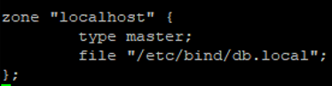
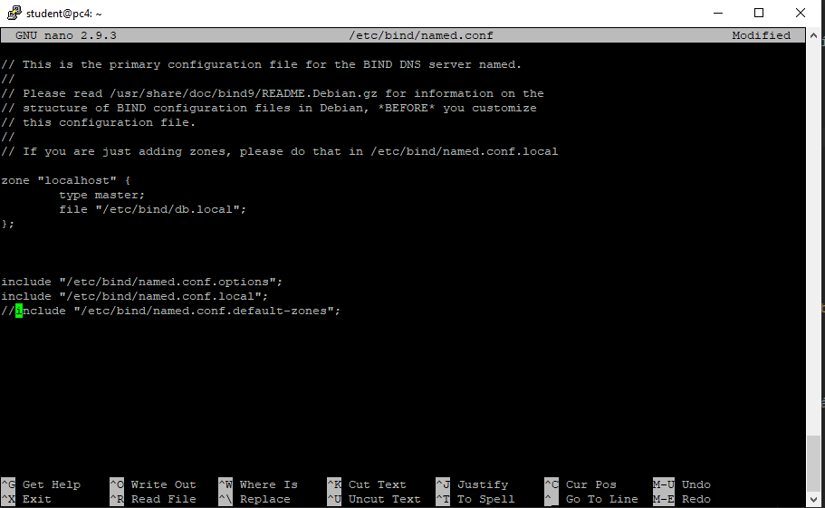
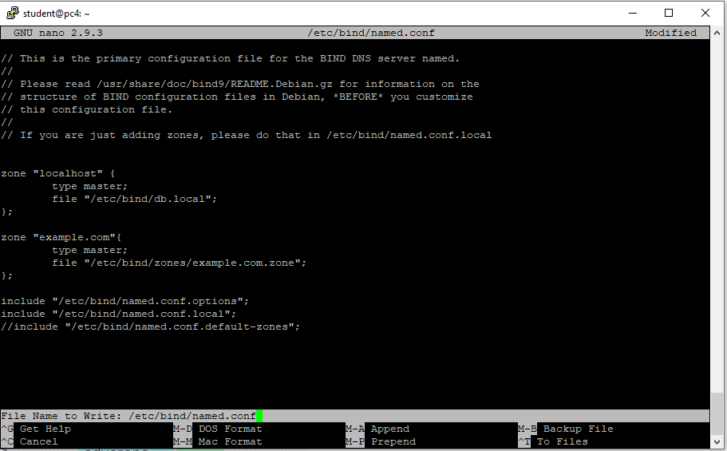
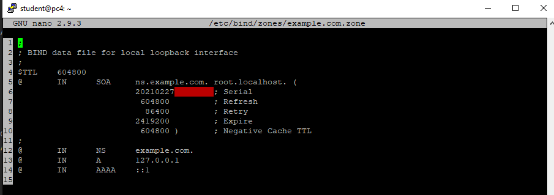
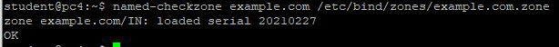
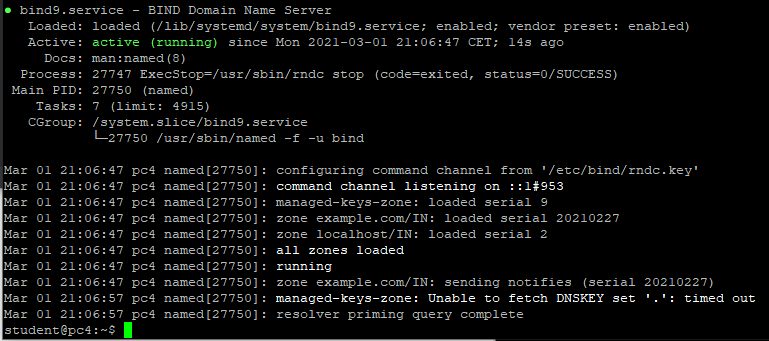
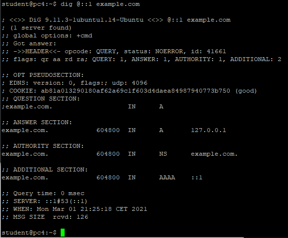
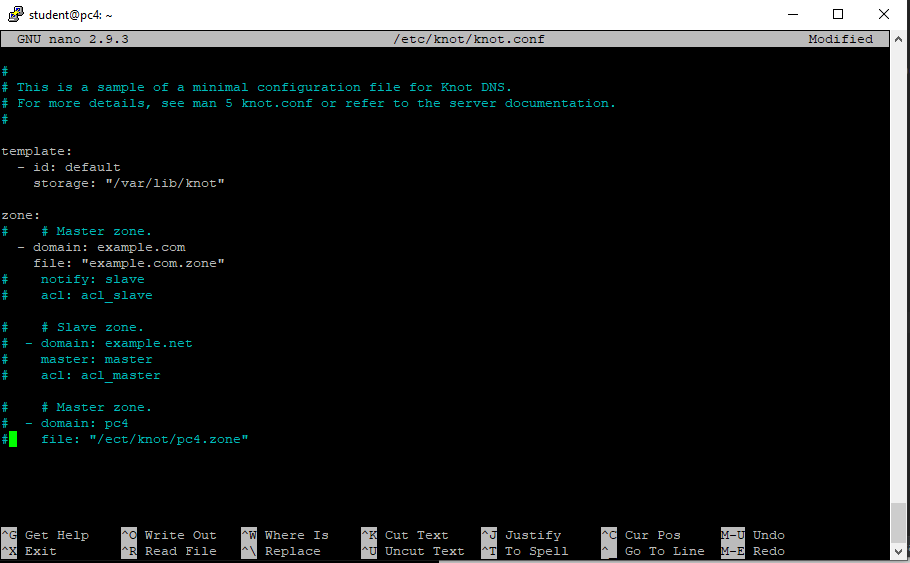
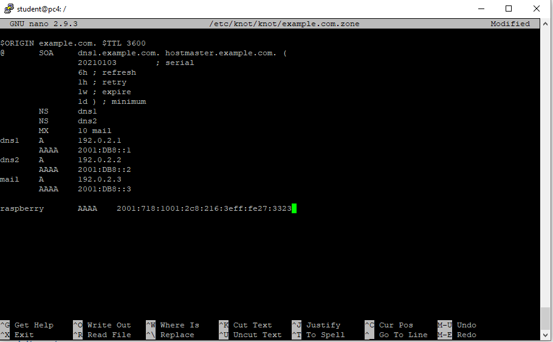

DNS (Domain Name System) je hierarchický, decentralizovaný systém doménových jmen, který je realizován servery DNS a protokolem stejného jména, kterým si vyměňují informace. Jeho hlavním úkolem a příčinou vzniku jsou vzájemné převody doménových jmen a IP adres uzlů sítě. Později ale přibral další funkce (např. pro elektronickou poštu či IP telefonii) a slouží dnes de facto jako distribuovaná databáze síťových informací.
První věc co se musí udělat pokaždé, je aktualizace balíčků pomocí příkazu a instalace bind9 na vašem přiděleném PC!
sudo apt update
sudo apt install bind9
Dalším krokem bude najít soubor named.conf.default-zones, ze kterého budeme kopírovat zónu localhost, která má typ master. Následně ji budeme vkládat do named.conf. Aby jsme mohli text kopírovat, použijeme příkaz nano
nano /etc/bind/named.conf.default-zones
Zde najdeme
Tuto část budeme kopírovat do souboru named.conf. Najdeme si tedy soubor named.conf pomocí následujícího příkazů. Tentokrát využijte sudo, jinak soubor nepřepíšete!
sudo nano /etc/bind/named.conf.default-zones
Zde použijeme zónu a za komentujeme soubor named.conf.default-zones, jelikož už používáme zónu z tohoto souboru. Pokud nevíme, jestli soubor neobsahuje chybu, spustíme si kontrolu příkazem named-checkconf /etc/bind/named.conf
Do named.conf přidáme další zónu.
K tomu si vytvoříme složku sudo mkdir /etc/bind/zones. Abychom nemuseli celý zónový soubor vytvářet znovu, tak si zkopírujeme soubor db.local. To provedeme pomoci příkazů sudo cp /etc/bind/db.local /etc/bind/zones/example.com.zone
Soubor si otevřeme pomocí nano a upravíme ho podle potřeb. Za Serial pro přehlednost, doporučuji dát datum.
Pozor na tečky, pokud nevíme jestli máme soubor správně napsaný, využít příkaz named-checkzone example.com /etc/bind/zones/example.com.zone. Takto vypadá správná kontrola
Nyní si restartujeme bind9 pomocí příkazu sudo systemctl restart bind9.service a otevřeme si nový příkazový řádek. Do něj vložíme příkaz sudo systemctl status bind9.service, tímto ověříme že základ pro DNS je funkční. K tomu si přidáme dig @::1 example.com a ověříme si, že dostaneme odpověď
 Bind9 je velice háklivý na jakoukoliv mezeru, takže si na to dejte pozor!
První věc co se musí udělat pokaždé, je aktualizace balíčků pomocí příkazu a instalace bind9 na vašem přiděleném PC!
sudo apt update
sudo apt install knot
Po nainstalování si upravíme soubor knot.conf pomocí příkazu sudo nano /etc/knot/knot.conf
Vytvoříme si example.com.zone podle Knot DNS Example
Pomocí příkazů sudo nano /etc/knot/knot/example.com.zone
Domain Name Server - doc. Ing. Jaroslav Zdrálek, PhD.